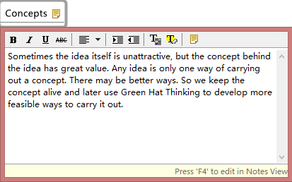
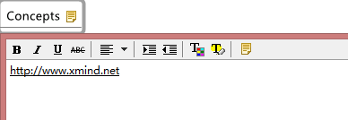
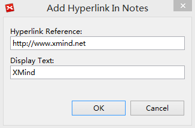
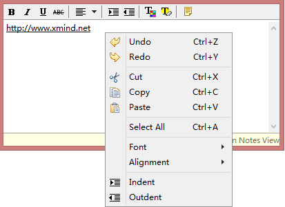

注
注はリッチ テキスト形式で、トピックの注釈に使用します。詳細な情報を記述するために、簡単に注を作成し書式設定することができます。
トピックに注を追加:- トピックを選択します。
- これらいずれかの方法でポップアップダイアログボックスを開きます。
- 'F4'キーを押します。
- ツールバーの注アイコンをクリックする。
- 右クリックして、[注]を選択する。
- 注のポップアップダイアログボックスに、説明を記入します。
- 「Ctrl + Enter」(Mac では Command+Enter)を押して、注を保存しダイアログ ボックスを閉じます。
注: "Ctrl + Enter"は現時点で Linux 上で使用できません。

注の書式設定 :- "F4" キーでポップアップダイアログボックスを開き、もう一度注のビュー を開きます。
- 注のツールバーを使用して、書式を設定します。
- テキストのフォント、サイズ、種類、位置合わせ、色。
- 背景色。
- 画像の挿入。
- ハイパーリンクの挿入。
- 注に"http://www.xmind.net"のような文言を入力した XMind はハイパーリンクとして自動的に書式設定します。



注のハイパーリンクを開く- 注のビューを開きます。
- Ctrl キー(Mac では Commandキー) 押し、リンクをクリックします。
注: トピックの注には、ローカルファイルの画像のみを挿入できます。